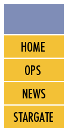

|  |
|
||
Club Position: Vice-PresidentService Record:Joined club Sept. 2006 Rank: EnsignElected to VP (March 2007). Officially assumed executive position Aug 2007 ; promoted to Cmdr Re-Elected in March 2008 Re-Elected in March 2009 Stepped down from position in Spring 2010; promoted to Vice Admiral Personal InformationName: Monique TheriaultRank: Vice Admiral Position: Vice-President Gender: Female Age: 22 (Terran Years) Race: Human Birthplace: Across from West Edmonton Mall Hair Color: Light brown Eye Color: Blue EducationBSc with a double major in Psychological and Biological Sciences * Specialist Skills: - DDR, and Stealth BackgroundMonique became Commander of Starfleet with no previous training, since the fleet was experiencing a shortage of qualified personnel. Since then she has persevered and was re-elected to position the following year. She has expanded her knowledge and skills considerably during the past couple of years, but understand that she still has much to learn. Her future plans include furthering her education, and applying to medical schools throughout the universe. However if she is not accepted, she plans to go venturing into the unknown of the Orient for a year. She enjoys the primitive activities of DDR, listening to music, reading, drawing, and also enjoys socializing with her close friends and family. |